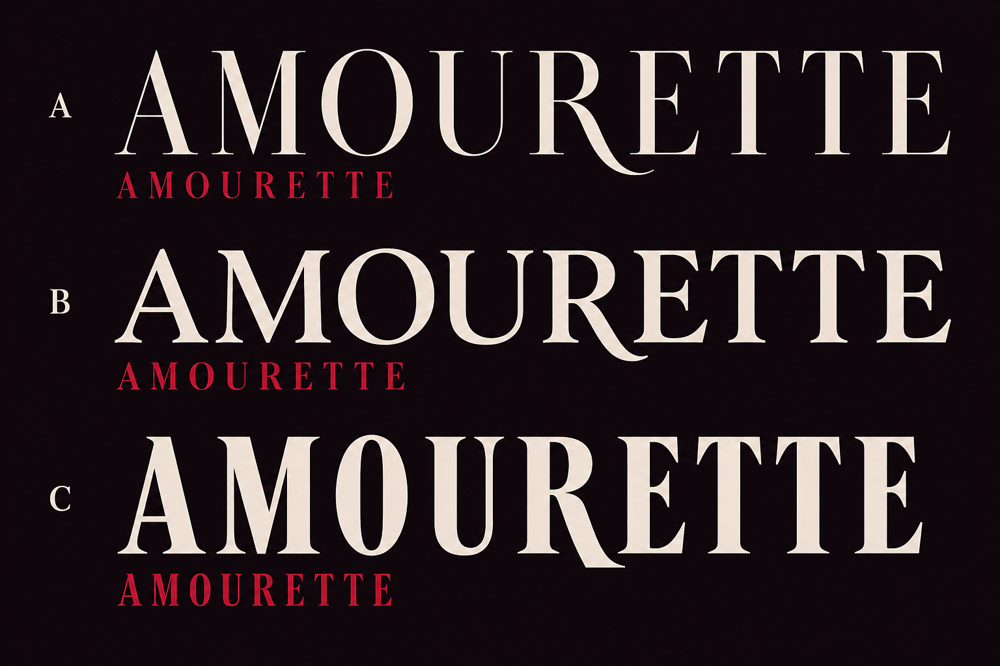

New: the R curve extends under the E
AMOURETTE / A distinctive detail
Previous explorationCormorant Garamond, spaced capitals, four approaches. A quiet reference, two letter details, and one freer proposal. These are sketches to combine and refine.
01Pure
Download SVG{kind=link}
The reference. Medium-weight Cormorant, generous spacing, and small optical adjustments between letters.
02The linked T pair
Download SVG{kind=link}
A fine bridge between the two T letters. The distinctive detail sits inside the word, without adding an emblem.
Watch whether the bridge feels intentional, or whether the two letters become harder to read.
03The sweeping R
Download SVG{kind=link}
A curved leg extends just below the baseline. One possible accent, inspired by the original exploration.
The curve should add movement without drawing all the attention away from the name.
04The ribbon Wildcard
Download SVG{kind=link}
A small drawn knot above the spaced wordmark. More playful, with a fashion character; the ornament can also stand on its own.
A deliberate stretch: does it feel like Amourette, or too much like jewellery or a fashion label?
Original A / B / C reference
